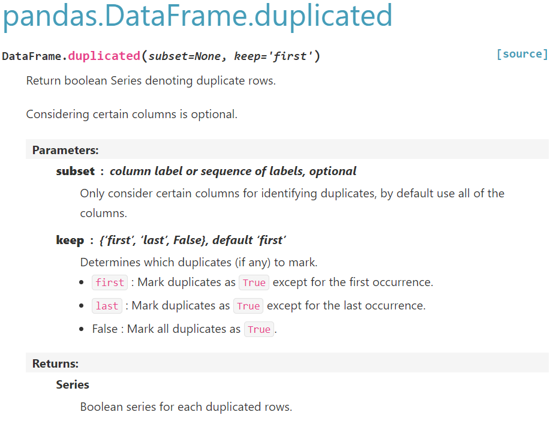

import pandas as pd
df_duplicated = pd.DataFrame({'city': ['seoul']*3 + ['busan']*2,
'num' : ['02'] *3 + ['051']*2})
df_duplicated| city | num | |
|---|---|---|
| 0 | seoul | 02 |
| 1 | seoul | 02 |
| 2 | seoul | 02 |
| 3 | busan | 051 |
| 4 | busan | 051 |
Pandas 중복 데이터 제거하기
gabriel yang
September 14, 2023
데이터프레임에는 중복 데이터가 존재할 수 있습니다. 중복 데이터가 계산 결과에 영향을 주는 의도된 데이터가 아니라면 중복 데이터를 적절하게 처리하는 것이 필요할 수 있습니다. 현업에서 진행하게 된다면 이 과정은 데이터에 대해서 이해한 업무 담당자와 확인이 필요합니다. 중복데이터 연습을 위해서 데이터프레임을 생성합니다.
import pandas as pd
df_duplicated = pd.DataFrame({'city': ['seoul']*3 + ['busan']*2,
'num' : ['02'] *3 + ['051']*2})
df_duplicated| city | num | |
|---|---|---|
| 0 | seoul | 02 |
| 1 | seoul | 02 |
| 2 | seoul | 02 |
| 3 | busan | 051 |
| 4 | busan | 051 |
도시 이름에 맞는 지역번호를 정보로 저장하는 데이터프레임으로 생성합니다. city 컬럼 정보를 이용하여 지역번호를 확인하기 위해 데이터프레임을 사용한다면 city정보가 중복될 필요가 없습니다. 중복되는 데이터를 정리할 수 있습니다. 중복된 열정보는 duplicated()함수를 이용하여 확인합니다.
중복된 열정보를 갖는 boolean Series가 리턴되었습니다. 이 정보를 이용해서 중복된 열을 제거합니다. 중복된 열은 drop_duplicates()함수를 사용합니다. 함수의 [API정보]를 확인하면 keep 파라메터를 이용해서 어떤 위치의 중복열을 True로 표시할지 결정합니다.

마지막 중복열을 제외한 모든 열을 True로 정의하기 위해서 keep 파라메터를 last로 전달합니다. 기본은 first값을 갖는군요.
중복된 열의 마지막 열만 남고 중복된 열이 삭제되었습니다. 아직 df_duplicated 데이터프레임의 정보는 변경되지 않았다는 것을 주의해야합니다.
데이터프레임을 변경하는 경우 변수에 결과값을 다시 전달하거나 함수가 inplace파라메터를 지원해서 데이터프레임을 바로 수정할 수 있는 지 확인해야 합니다.
이제 중복을 제거한 데이터프레임의 city컬럼의 정보가 busan인 열을 선택합니다. 선택을 위해서 df에 boolean indexing결과를 전달합니다.